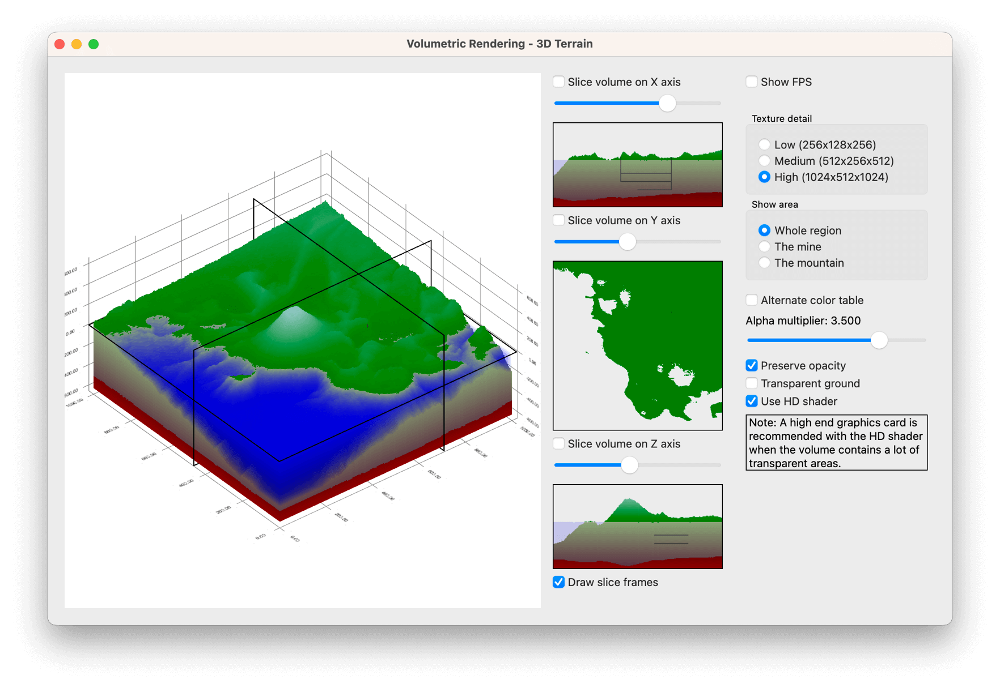

Volumetric Rendering
Rendering volumetric objects.
Volumetric Rendering shows how to use QCustom3DVolume to display volumetric data.

Running the Example
To run the example from Qt Creator, open the Welcome mode and select the example from Examples. For more information, visit Building and Running an Example.
Initializing Volume Item
The QCustom3DVolume items are special custom items (see QCustom3DItem), which can be used to display volumetric data. The volume items are only supported with orthographic projection, so first make sure the graph is using it:
m_graph->setOrthoProjection(true);
Create a volumetric item tied to the data ranges of the axes:
m_volumeItem = new QCustom3DVolume; // Adjust water level to zero with a minor tweak to y-coordinate position and scaling m_volumeItem->setScaling( QVector3D(m_graph->axisX()->max() - m_graph->axisX()->min(), (m_graph->axisY()->max() - m_graph->axisY()->min()) * 0.91f, m_graph->axisZ()->max() - m_graph->axisZ()->min())); m_volumeItem->setPosition( QVector3D((m_graph->axisX()->max() + m_graph->axisX()->min()) / 2.0f, -0.045f * (m_graph->axisY()->max() - m_graph->axisY()->min()) + (m_graph->axisY()->max() + m_graph->axisY()->min()) / 2.0f, (m_graph->axisZ()->max() + m_graph->axisZ()->min()) / 2.0f)); m_volumeItem->setScalingAbsolute(false);
Indicate that the scaling of the volume should follow the changes in the data ranges by setting the QCustom3DItem::scalingAbsolute property to false. Next, define the internal contents of the volume:
m_volumeItem->setTextureWidth(lowDetailSize); m_volumeItem->setTextureHeight(lowDetailSize / 2); m_volumeItem->setTextureDepth(lowDetailSize); m_volumeItem->setTextureFormat(QImage::Format_Indexed8); m_volumeItem->setTextureData(new QList<uchar>(*m_lowDetailData));
Use eight bit indexed color for the texture, as it is compact and makes it easy to adjust the colors without needing to reset the whole texture. For the texture data, use the data created earlier based on height maps. Typically, the data for volume items comes pregenerated in the form of a stack of images, so the data generation details can be skipped. For more information about the actual data generation process, see the example code.
Since eight bit indexed colors are used, a color table is needed to map the eight bit color indexes to actual colors. In a typical use case, you would get the color table from the source images instead of using one manually defined:
m_volumeItem->setColorTable(m_colorTable1);
To have an option to show slice frames around the volume, initialize their properties. Initially, the frames will be hidden:
m_volumeItem->setSliceFrameGaps(QVector3D(0.01f, 0.02f, 0.01f)); m_volumeItem->setSliceFrameThicknesses(QVector3D(0.0025f, 0.005f, 0.0025f)); m_volumeItem->setSliceFrameWidths(QVector3D(0.0025f, 0.005f, 0.0025f)); m_volumeItem->setDrawSliceFrames(false);
Finally, add the volume as a custom item to the graph to display it:
m_graph->addCustomItem(m_volumeItem);
Slicing into the Volume
Unless the volume is largely transparent, you can only see the surface of it, which is often not very helpful. One way to inspect the internal structure of the volume is to view the slices of the volume. QCustom3DVolume provides two ways to display the slices. The first is to show the selected slices in place of the volume. For example, to specify a slice perpendicular to the X-axis, use the following method:
m_volumeItem->setSliceIndexX(m_sliceIndexX);
To display the slice specified above, the QCustom3DVolume::drawSlices property must also be set:
m_volumeItem->setDrawSlices(true);
The second way to view slices is to use QCustom3DVolume::renderSlice() method, which produces a QImage from the specified slice. This image can then be displayed on another widget, such as a QLabel:
m_sliceLabelX->setPixmap( QPixmap::fromImage(m_volumeItem->renderSlice(Qt::XAxis, m_sliceIndexX)));
Adjusting Volume Transparency
Sometimes, viewing just the slices doesn't give you a good understanding of the volume's internal structure. QCustom3DVolume provides two properties that can be used to adjust the volume transparency:
m_volumeItem->setAlphaMultiplier(mult); ... m_volumeItem->setPreserveOpacity(enabled);
The QCustom3DVolume::alphaMultiplier is a general multiplier that is applied to the alpha value of each voxel of the volume. It makes it possible to add uniform transparency to the already somewhat transparent portions of the volume to reveal internal opaque details. This multiplier doesn't affect colors that are fully opaque, unless the QCustom3DVolume::preserveOpacity property is set to false.
An alternative way to adjust the transparency of the volume is to adjust the alpha values of the voxels directly. For eight bit indexed textures, this is done simply by modifying and resetting the color table:
int newAlpha = enabled ? terrainTransparency : 255; for (int i = aboveWaterGroundColorsMin; i < underWaterGroundColorsMax; i++) { QRgb oldColor1 = m_colorTable1.at(i); QRgb oldColor2 = m_colorTable2.at(i); m_colorTable1[i] = qRgba(qRed(oldColor1), qGreen(oldColor1), qBlue(oldColor1), newAlpha); m_colorTable2[i] = qRgba(qRed(oldColor2), qGreen(oldColor2), qBlue(oldColor2), newAlpha); } if (m_usingPrimaryTable) m_volumeItem->setColorTable(m_colorTable1); else m_volumeItem->setColorTable(m_colorTable2);
High Definition vs. Low Definition Shader
By default, the volumetric rendering uses a high definition shader. It accounts for each voxel of the volume with the correct weight when ray-tracing the volume contents, providing an accurate representation of even the finer details of the volume. However, this is computationally very expensive, so the frame rate suffers. If rendering speed is more important than pixel-perfect accuracy of the volume contents, take the much faster low definition shader into use by setting QCustom3DVolume::useHighDefShader property false. The low definition shader achieves the speed by making compromises on accuracy, so it doesn't guarantee that every voxel of the volume will be sampled. This can lead to flickering or other rendering artifacts on the finer details of the volume.
m_volumeItem->setUseHighDefShader(enabled);